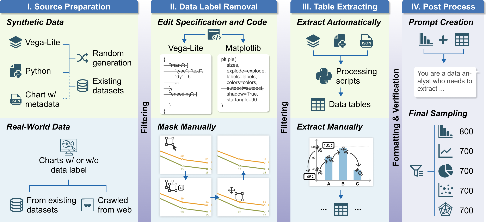
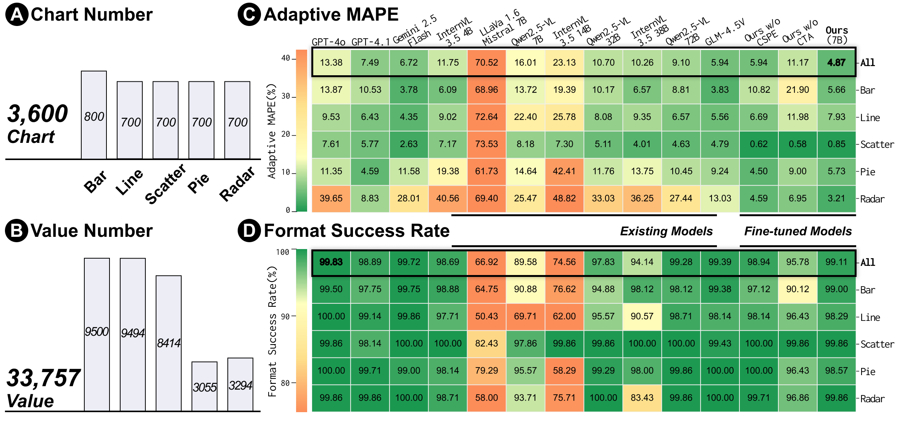
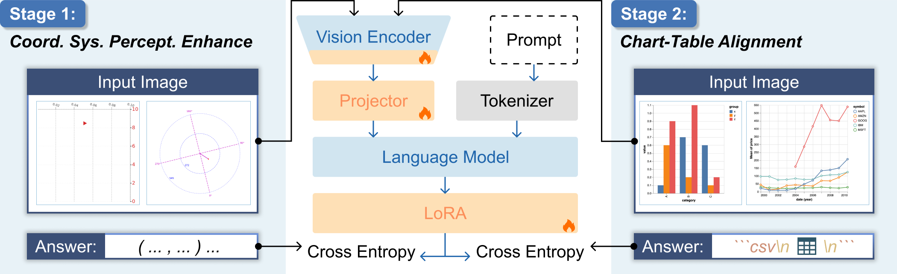
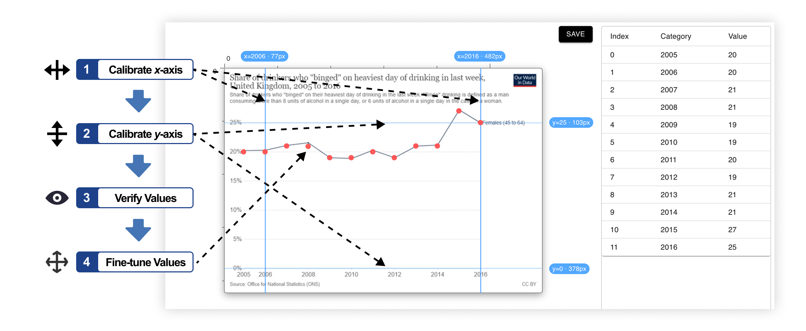

We study whether MLLMs can reliably perform chart data extraction, analyze their limitations in recovering precise values, and propose a human-inspired training framework to improve their accuracy.
We introduce ExChart-Bench, a benchmark for evaluating MLLMs on chart data extraction.


We introduce ExChart, a two-stage training framework inspired by how humans read charts.

Instead of directly mapping charts → tables, we decompose the task:
While fully automatic chart data extraction remains unreliable, our results suggest that MLLMs can serve as unified extration modules in mixed-initiative workflows, combining MLLM-based end-to-end extraction with human verification.

Chart data extraction, which reverse-engineers data tables from chart images, is essential for reproducibility, analysis, retrieval, and redesign. Existing interactive tools are reliable but tedious, and mixed-initiative systems, while more efficient, lack generalizability. Recent multimodal large language models (MLLMs) offer a unified interface for chart interpretation, yet their ability to extract accurate data tables, especially without visible labels, remains unclear. We build a benchmark featuring diverse real-world charts without data labels to evaluate this capability. Results show that, while current MLLMs reliably reconstruct table structures, they struggle with precise value recovery. To address this, we revisit chart data extraction from a human-centered perspective and argue that extraction should follow a progressive learning process similar to how people read charts. Our training framework substantially improves numerical accuracy, achieving state-of-the-art performance with a 7B-parameter model. A user study further shows that our model effectively supports mixed-initiative workflows for reliable chart data extraction.
@inproceedings{he2026exchart,
author = {He, Yuchen and Ying, Peizhi and Cheng, Liqi and Peng, Kuilin and Tian, Yuan and Deng, Dazhen and Wu, Yingcai},
title = {Making Multimodal LLMs Reliable Chart Data Extractors: A Benchmark and Training Framework},
year = {2026},
isbn = {9798400722783},
publisher = {Association for Computing Machinery},
address = {New York, NY, USA},
url = {https://doi.org/10.1145/3772318.3790721},
doi = {10.1145/3772318.3790721},
booktitle = {Proceedings of the 2026 CHI Conference on Human Factors in Computing Systems},
series = {CHI '26}
}